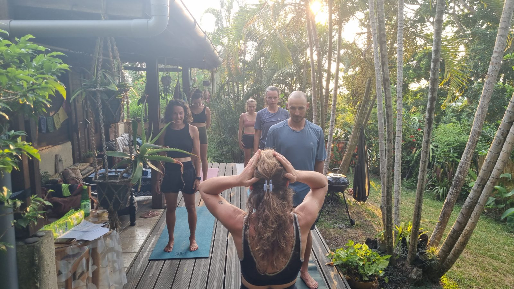

Yoga mobile · La Réunion
Le yoga, accessible et solidaire.
Pour que le bien-être ne soit plus un luxe mais un outil du quotidien. Cours collectifs à prix libre, interventions en structures sociales et médico-sociales, séances pour les équipes associatives et salariées.
Tous les corps sont bienvenus


5-6 personnes par groupe